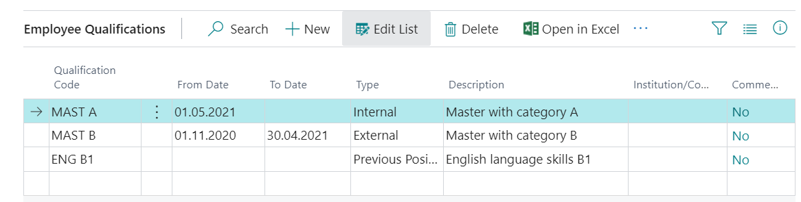

Employees Card
Fields marked with an exclamation mark "!" at tab Field type are mandatory.
Tab: General
| Field Name | Field Type | Description |
|---|---|---|
| No | ! | Fills in automatically. |
| First Name | ! | Employee's name. |
| Middle Name/Initials | Employee's middle name or initials. | |
| Last Name | ! | Employee's surname. |
| Search Name | Fills in automatically. | |
| Gender | ! | Gender of employee. |
| Company Phone No. | Free field for information. | |
| Company Email | Free field for information. | |
| Last Date Modified | Information field for controlling the amounts paid to the employee. | |
| Privacy Blocked | Enabled, if the employee has written a request to block information about him. In this case, this employee is not reflected in the relevant lists. | |
| PayOut Amount | Information field for controlling the amounts paid to the employee. | |
| Payment Amount Before Correction | Information field. | |
| Payment Amount | Information field for controlling the amounts paid to the employee. | |
| Remaining Payment Amount | Information field for controlling the amounts paid to the employee. | |
| Disallowed Congratulations | To be filled in if the employee does not want to post his/ her birthday after GDPR. |
Tab: Address & Contact
This tab lists addresses, phone numbers, email addresses, and alternate addresses. The number of alternative addresses can be unlimited. Fields are filled in as needed. If the employee wants to receive salary slips to the e-mail address, then the field Private Email is mandatory
You can enter an unlimited number of alternate addresses for each employee. To do this, enter the code and the corresponding contact information in the Alternate addresses list. Next, one of the Alternate Address codes can be entered in the field provided on the employee card tab Address & Contact.
Tab: Administration
| Field Name | Field Type | Description |
|---|---|---|
| Employment Date | ! | The field will fill in automatically, where information is taken from Labor Contract card |
| Status | ! | Active, Inactive, Terminated. Active fills in by default. |
| Inactive Date | Planned date of termination, if an employee has been recruited for a limited period of time. | |
| Cause of Inactivity Code | Choose employee inactivity reason code. | |
| Termination Date | ! | Mandatory field when terminating an employee. |
| Grounds for Term. Code | Indicates the ground for termination code when terminating the employment. For the purposes of analysis, countless ground of termination can be created and maintained, what later can be used in personnel orders of terminations. The list of Grounds for Termination can be found with system search function. In addition, you can define and maintain countless reasons for termination. The list of reasons for termination can be found in the system search function by typing a name Termination Reasons. | |
| Emplymt. Contract Code | Indicate the code of the employment contract related to the employee. | |
| Resource No. | Indicates the employee resource number. | |
| Salespers./Purch. Code | Indicates the code assigned to the employee who is the seller or buyer. | |
| In Trade Union | Enables if the employee is a member of trade union. |
Tab: Personal
| Field Name | Field Type | Description |
|---|---|---|
| Birth Date | ! | Indicates the employee's date of birth. |
| Social Security No. | ! | In case of a non-resident, NMR code assigned by the Republic of Latvia. In case the personal identification code starts with 32, the date of birth will not be filled in. |
| Previous Social Security No. | ! | If a new personal code is entered in the Social Security No. field, the previous personal code will be automatically copied to the Previous Social Security No. field. Make sure that the previous personal identification code is copied in the field Previous Social Security No, prior to that the field Previous Social Security No must be blank. |
| Union Code | If the employee has joined an association. | |
| Union Membership No. | Required field when releasing an employee who is a member in an association. | |
| Residence | ! | Resident fills in by default. In case the option is selected Nonresident, then for non-residents the income tax will not be filled in in the report of employer. |
| Nonresident ID Code | Indicate the personal identification code assigned to the non-resident. | |
| Working Permit Date | Indicate the date until which the work permit is valid. |
Tab: Payments
| Field Name | Field Type | Description |
|---|---|---|
| Employee Posting Group | ! | Selects an employee posting group from the list. |
| Application Method | Specify how to apply payments to this employee. | |
| Bank Branch No. | Indicate the name of the bank branch of the employee's salary account. | |
| Bank Account No. | Specifies the employee's bank account to which the payroll payment is to be made. | |
| IBAN | ! | International code of the employee's bank account to which the salary payment is to be made.** |
| SWIFT code | ! | Bank SWIFT code. |
Tab: Payroll
| Field Name | Field Type | Description |
|---|---|---|
| Social Status Code | ! | Selects the employee status code from the list. |
| Company Contract | Enable if the employee works under a company contract. | |
| Royalty | Enable if the employee receives royalties. | |
| Test Period | Indicate the length of the test period. For example 3M. | |
| Test Period End Date | The value is filled automatically based on the recruitment date and the specified test period length. If personnel module is enabled, then the value is also settled from the labor contract, if the test period was indicated there. | |
| Vacation Day Correction | This field is used to enter the balance of accrued vacation days. Day amount with minus sign to add the day and plus sign to reduce the remaining vacation day balance. Supposed to use for the initial data transfer to the system. | |
| Average by Hours | If the calculation should be made taking into account the hours. | |
| NonResident Income Type | Indicate if the employee is a non-resident. |
Tab: Employee Positions
An essential part of an employee card!
This tab specifies the parameters required for the calculation, such as the calendar, the date of appointment, the title of the position. Completion of position information is carried out through labor contracts or personnel orders. Employee position No. is assigned automatically, by creating a new employees' position card. Numbering required for the system to correctly calculate the salary in case if employee has changed the position. In case of a position change, a new employee position is automatically assigned to the new position number.
Dimension to the position can be assigned by opening the Employee's Position Card and clicking the button Dimensions, or by selecting the desired position (if several positions are assigned), clicking on the function menu  and pressing on the button Dimensions-Single
and pressing on the button Dimensions-Single  as it shown in the picture below.
as it shown in the picture below.
When pressing the button View  , a new window will opens Employee Position Card, where are available following fields:
, a new window will opens Employee Position Card, where are available following fields:
| Field Name | Field Type | Description |
|---|---|---|
| No. | The numbering of the employee's position is necessary for the system to be able to correctly calculate the salary in case the employee's position has changed. In case of a change of position, the new position is automatically assigned a new Employee position number. | |
| Employee No. | Selects an employee from the list. | |
| From Date | The position takes effect on a date specified in this field. For the first employee position, this field is filled in by the recruitment date by default. | |
| To Date | Indicate if the position has a known expiry date. | |
| Planned To Date | Indicate if the post is planned to expire. | |
| Position Code | ! | Selects an employee's position from the job list. |
| Position Description | ! | The name is read automatically from the selected position card. |
| Department Code | ! | Selects the employee's department. |
| Primary Position | If the employee has several positions, then the main one among all positions must be indicated. | |
| Skip in Salary | In case of termination, this field is checked automatically as soon as the last Salary list has been created. | |
| Schedule/Accounting | ! | By completing this field, the employee's salary calculation occurs only successive by schedule / accounting; If this field is not filled, the calculation is based on the basis of working time calendar and changes can be made only with the help of an hour registry. |
| Salary Type | ! | Indicates the type of employee's salary calculation (normal or aggregated working time). |
| Loading | Intended for statistical reporting. | |
| Calendar Code | ! | Selects from a list of calendars. The calendar is the basis for all calculations. |
| Calendar Name | The calendar code is read automatically from the Calendar list. | |
| Cycle Calendar Setup | Appears information on cycle calendar, if it was indicated in the field Calendar code. | |
| Don't use def. vacation cal. | Do not use the default vacation calendar. | |
| Statistics Group Code | The appropriate code is selected from the position code classifier. | |
| Work Time Undeterminable | Indicate if it is not possible to determine the hours actually worked. | |
| Global Dimension 1 Code | If necessary, indicate the 1st global dimension. | |
| Global Dimension 2 Code | If necessary, indicate the 2nd global dimension. | |
| Labor contract No. | The labor contract number is specified. | |
| Personnel order No. | The personnel order number is specified. | |
| Personnel order line No. | The personnel order line number is specified. |
If necessary, it is also possible to assign dimensions to the employee position in the Employee Position Card.
Employee Payroll Components
The Payroll Components specify the tax, benefit, and deduction components that should be included in the employee's payroll calculation.
Salary components are created by recording the employee's labor contract.
Employee Payroll Components can be viewed by clicking on the buttons Process - Employee Payroll Components on the toolbar. By opening the component's window, only those payroll components will be visible (filtered), what are active on the current working date. To see all the components, you must remove the date filters. However, next time when you open the components again, actual data filter will be set back again. To review all historical data it is recommended to use system's filter Show all history data under the section All.
Employee Payroll Components is the place where should be indicated the basic salary component as well as other regular additional income components (additional pays, bonuses, rewards, etc., which are constant amounts each month, and lasts for a long period of time).The salary advance amount to be paid shall be specified in the advance component. If necessary, the lines are supplemented with information on reliefs - Dependents, Disability, Repressed.
Tip
In case the employee has submitted the salary tax book to the employer, this should be registered in the list Related information, which can be found in the toolbar by clicking on Navigate -Additional Info. For Payroll.
Payroll Components shall also include information on long-term deductions (writ of execution, alimony, fee for car use, etc). Deductions are recorded in the employee card only if they are constant amounts that are repeated each month. One-time deductions should be recorded in Component Registers.
Deductions - In the employee salary components is a possibility to specify the following information:
| Field Name | Description |
|---|---|
| Total Limit | Specifies the total amount of debt according to writ of execution. deductions will be ended above this amount. |
| Calculated Deducted Amount | Informative field. The system here represents the total amount deducted for this particular writ of execution (the total amount from all salary lists). |
| Month Limit | Indicates a minimum monthly limit. |
| PayOut Limit | Indicates the minimum limit of the employee's salary payment. |
| PayOut Limit Base | Indicates the limit base if a PayOut Limit is specified. |
If after the withholding the amount should be transferred to third party to another bank account, then you need to enter all bank account data in the employee card by clicking on buttons Related - Additional Info. For Payroll - Payment to third parties.
Copy Employee
The copying function is convenient to use if the employee after termination has been employed again in the company. However to avoid possible errors (For example, in the calculation of the average gain, SRS reports), it is advisable to create a new employee card. To start a copying, you should first create a new employee card. In the employee card's toolbar press on Related - Creating Add. Info -Copy Employee. In the Options section must be selected Source Employee No., As well as note some information would like to copy.

Additional employee information in the employee card


Qualifications
A qualification list of employees can be maintained in the system. Based on this, it is possible to keep track of when trainings and briefings need to be repeated (for example, using a report Employee qualifications).
Qualifying codes are entered in separate line, indicating the freely selected code () and a description (). If in field Qualified Employees () is a note Yes, then by clicking on the link you can view a list of employees assigned this particular qualification.
Once all the information is entered, when you can define the employee's qualifications. Opens the required employee card and selects in employee card toolbar Related - Employee - Qualifications.

| Field Name | Description |
|---|---|
| Qualification Code | Code from the register Qualifications.. |
| From date | Date of qualification. |
| To date | Qualification due date. |
| Type | Select the origin: Internal, External, from a Previous Position. |
| Description | Description of the type of education, filled in from the qualification register. |
| Institution/Company | Name of the external qualification institution of origin. |
| Comment | A note that a comment has been added to the post. |
Relatives
Available by clicking in the employee card on the buttons Related - Employee - Relatives.
The following fields are available for entering information:
| Field Name | Description |
|---|---|
| Relative Code | Specifies a relative code to define the type of relative. |
| First Name | If necessary, the name of the person shall be entered. |
| Birth Date | If necessary, a relative birth date shall be entered. Children are recorded mandatory, because according to the specified age, the system offers to assign additional vacation days for children under 14 years of age. |
| Age | System filled field, defending of the value in field Birth Date. |
| Disabled Person | Indicates if the child has a disability. This will affect the number of additional vacation days calculated. |
| Phone No. | If necessary, enter the phone number. |
| Comment | A note of the fact that a comment has been added to the record. |
The collected information on relatives can be analyzed with a system standard report Employee Relatives.
The items assigned
Available by clicking on the buttons Related - Employee - Misc. Article Information at the employee card. In this register can list all the material values assigned to the employee.
The following fields are available for entering information:
| Field Name | Description |
|---|---|
| Misc. Article Code | Specifies a code to define the type of miscellaneous item. |
| Description | Specifies a description of the miscellaneous item. |
| Serial No. | Specifies the serial number of the miscellaneous item. |
| From Date | Specifies the date when the employee first received the miscellaneous item. |
| To Date | Specifies the date when the employee no longer possesses the miscellaneous item. |
| In Use | Specifies that the miscellaneous item is in use. |
| Comment | Specifies if a comment is associated with this entry. |
Subsequently, registered data can be analyzed by a system standard report Employee Miscellaneous Article Information.
Confidential information
For each employee, if necessary, can maintain a separate register with information to be classified as confidential.
The following fields are available for data entry:
| Field Name | Description |
|---|---|
| Confidential Code | Specifies a code to define the type of confidential information. |
| Description | Specifies a description of the confidential information. |
| Comment | Specifies if a comment is associated with this entry. |
Subsequently, registered data can be analyzed by a system standard report Employee Confidential Information.
Employee's Status Codes
In the Employee's cards toolbar Related - Additional Info. For Payroll a function Status codes is available, where you can view and edit the social status codes associated with the employee, and on this basis the report Employee Social Sign Codes is prepared.
The social status code should be entered through the labor contract card, Employment personnel order card, Termination personnel order card un Position change order card. Status codes for maternity leave and non-payable vacation can be defined in Causes of Absence card's fields Absence Start Status Code and Work Restart Status Code.
Attachments
If necessary, to the employee card can be added files of any format (for example, CV, diplomas and other documents). Functionality is available for employee cards toolbar Employee - Attachments.